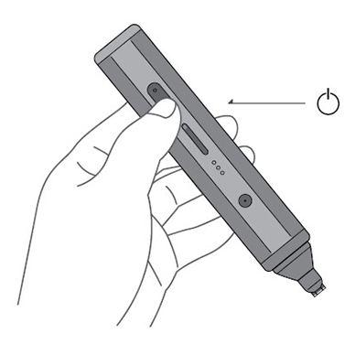
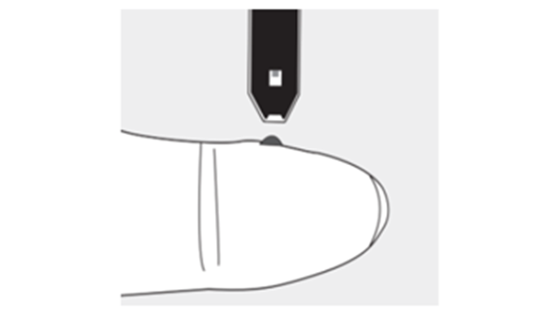

-
1.채혈계 전원 켜기
 채혈기의 전원 버튼을 3초 이상
눌러 전원을 켭니다 -
2.일회용 캡 체결
일회용 캡을 그림과 같이 채혈기
본체에 끼웁니다 -
3.레이저 단계 설정
레벨 선택 버튼을 이용하여 레이저
출력을 2 또는 3단계로 선택합니다 -
4.레이저 에너지 충전
충전 버튼을 눌러 에너지를 충전
합니다. 충전이 완료되면 부저음이
울립니다. -
5.검사지 삽입
혈당계에 검사지를 끼웁니다
-
6.채혈
채혈기의 끝을 손가락 부드러운
부분에 대고 부저음이 울리면
레이저 쏘기 버튼을 누릅니다. -
7.혈액주입
 검사지 끝 부분에 혈액을
주입합니다 -
8.측정결과 확인
잠시 후 혈당계의 표시창에서 측정 결과를 확인합니다